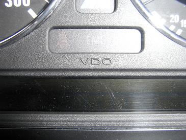
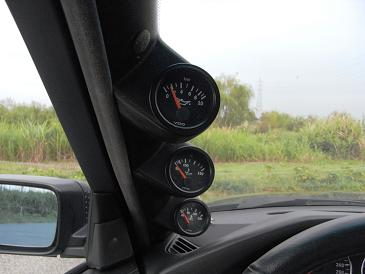
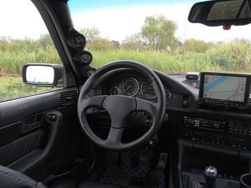

2009/8/20 3連メーターその2
今までオートゲージ製メーターを取り付けていたが、
どこかMゴローが抱くドイツ車とは違った雰囲気を感じていた。
機会があれば、ドイツ車の計器に良く使われているVDO製に交換しようと思っていたのだ。
そんな中、油圧計が不動になったので3連メーターをVDO製に交換した。

E34のメーターに刻まれているVDOの文字

バックライトがLEDのオートゲージとは違い、VDOは電球なのだ。
進化というよりは退化かもしれない（笑

センサー類も全てVDOに交換となる。
ただ、水温計のセンサーが手に入らず不動のまま。。